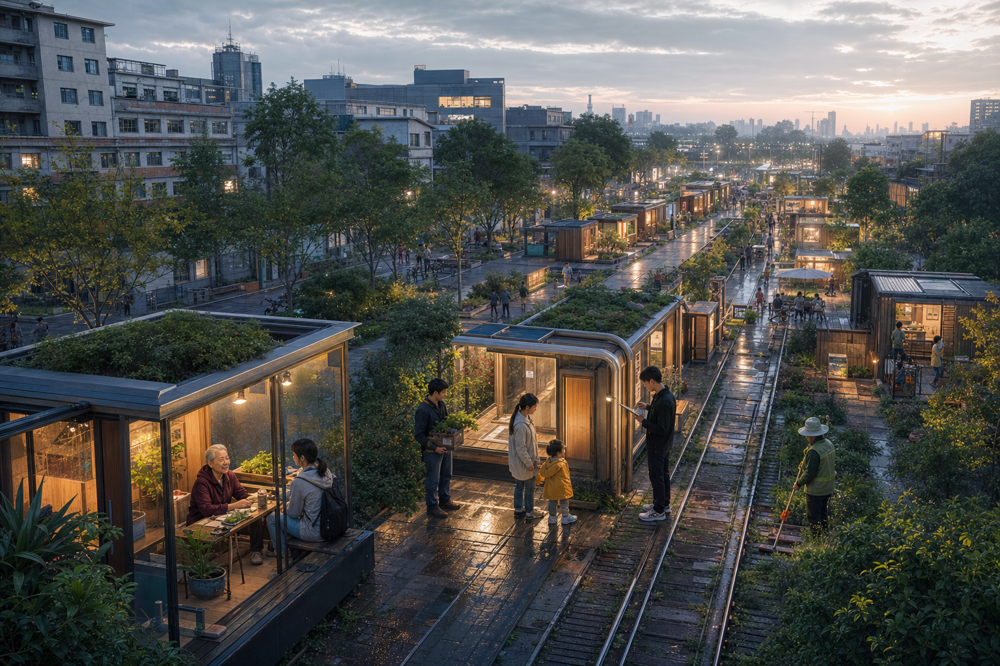

The First Urban Cell
官方公开来源支持的现实关系重绘；ZONE-01和CELL-001始终是CONCEPTUAL / PROVISIONAL。

Time × Space Evolution
2026—2030是最详细实施窗口；2126是Urban Seed累积演化的视觉后果。

Three Organs / One Loop
AI Origin public pilot → Zhongzhiyuan validate/govern → Dazhongsi stress test → failure/feedback/complaint → revise.

The City Adapts to a Person
68岁附近居民：Design Persona / Not Demographic Claim。

A City That Can Say Stop
Register → Notice → Pilot → Complaint / Opt-out → Review → Evaluate → Decide. CONTINUE returns to Pilot; MODIFY returns through Notice to a modified Pilot; SUSPEND enters Pause + Review; only RETIRE proceeds to Revoke → Delete Verify → Physical Recovery.

Five Design Personas + Evaluator
短距离、可坐可问、站外接力
稳定学习、预约协作
可信验证、失败边界
低认知负担、可退出
可诊断、可停机、可恢复
审计、投诉、撤销证据
One ID / One Meaning
One-way Accessible Journey
Adaptive Bay
Civic Information / Maintenance Loop
City OS 0.1 / Urban Cell Protocol
HUMAN INTENT → LOCAL URBAN AGENT → CAPABILITY REGISTRY → PERMISSION → HUMAN / SPACE / SERVICE ACTION → OUTCOME → AUDIT / FEEDBACK
治理与人工接管包围整个闭环；该示意不增加场景、MVP或Urban Cell类型。
Frozen Scenario Set / 11
Commons Open Study
Adaptive Bay
Civic Information / Maintenance Loop
One-way Accessible Journey
Human Steward Handoff
Public Feedback Assembly
Graduated Service Robot Validation
High-flow Urban Stress Drill
Privacy-preserving Spatial Intelligence Benchmark
Cross-cell Agent Interoperability Sandbox
Distributed Cell Network
S12 is the shared Civic Governance Layer, not a scenario and not a fourth MVP.
任务覆盖 / Technical Index
A0-01把C1现实关系与CELL-001空间原型并置。
三器官角色冻结；概念意向分区不作为法定用途。
C1、MVP-01与京张公共脊柱形成站外人本接力。
Existing Building + Public Forecourt；先轻改、后验证。
3 MVPs / 3 Industry Validation / 11 Scenarios / 10 Governance Stages。
17条来源；已登记 / 暂定 / 实施前核验三类状态清晰分离。
核心指标 / Draft Geometry Diagnostics
11,412,825.386 sqm
0.119346
0.024437
NOT OFFICIAL PLANNING INDICATORS
Evidence Status / 自检状态
17 sources; 3 MVPs; 3 industry validation scenarios; 11 scenarios; 10 governance stages.
Official boundary replacement, three key-area polygons, ZONE-01 and draft geometry diagnostics.
Carrier/publicness, accessibility, ownership, operator agreements and professional engineering conditions.
Pending does not equal submission failure; it identifies what must be verified before implementation.
2126 Vision
AI-GENERATED CONCEPT VISUALIZATION · VISION / NOT IMPLEMENTATION PROPOSAL
